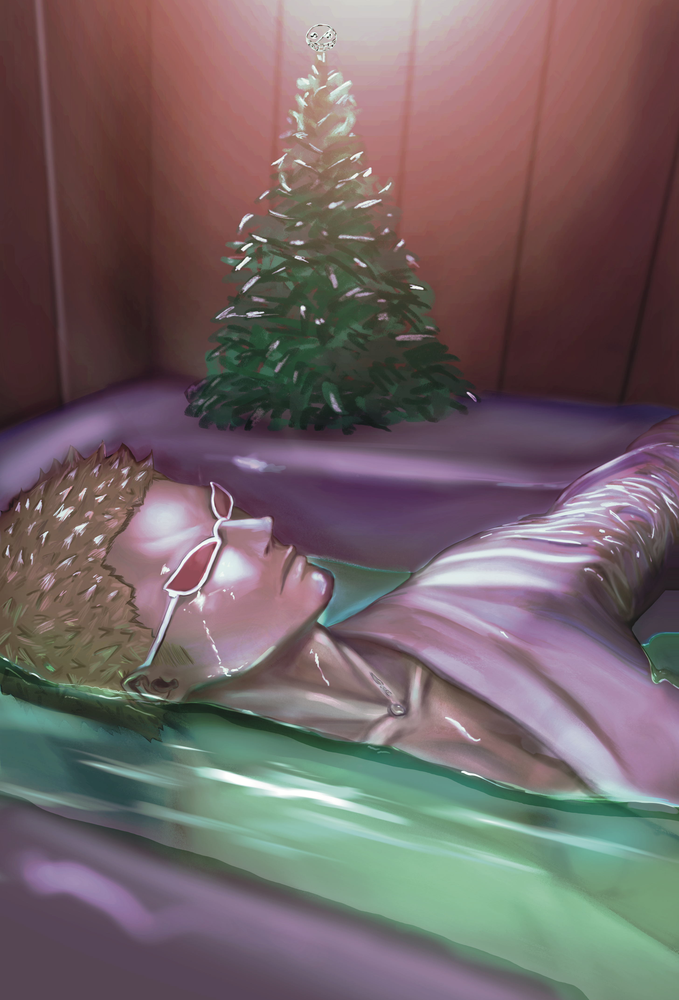
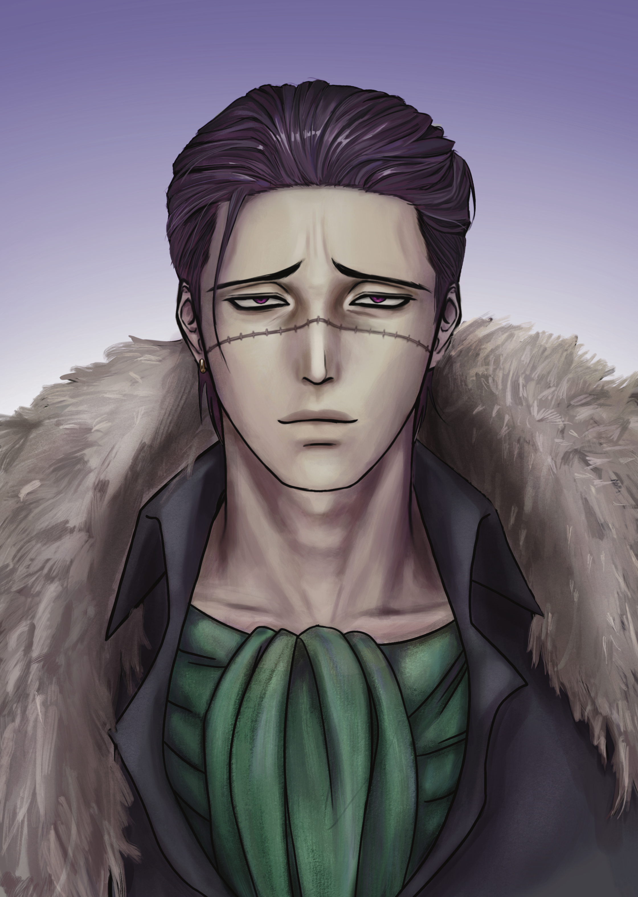
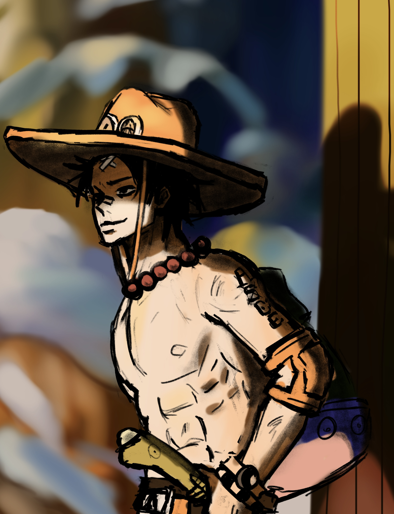

Characters
세계관 속 주요 인물들의 간단한 소개입니다.
이름을 누르면 상세 설정 페이지로 이동합니다.

PAST / OBSESSION
도플라밍고
누아의 어린 시절을 보호한 과거의 보호자. 애정과 소유, 트라우마가 뒤섞인 관계의 시작점.
상세 보기
ORIGINAL CHARACTER
아트리타스 누아
무해하게 웃지만, 감각과 애착으로 세상을 붙잡는 소녀. 자유로움을 사랑하면서도 버려짐에 대한 두려움을 품고 있다.
상세 보기
SHELTER / DRYNESS
크로커다일
냉철하고 건조한 현실주의자. 누아에게는 보호자이자, 가장 편히 머무를 수 있는 안식처.
상세 보기
FREEDOM / TRUST
에이스
통제도 소유도 없는 자유로운 신뢰 관계. 누아에게 동등하고 인간적인 애정을 알려주는 존재.
상세 보기